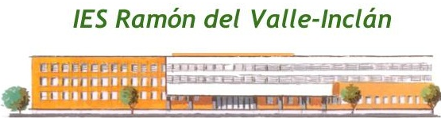

Cloud Computing and related technologies
Alberto Molina Coballes, José Luis Rodríguez Rodríguez and José Domingo Muñoz Rodríguez
Cloud Computing in European schools. Project: 2017-1-ES01-KA202-038471


Theme by: reveal.js
Disclaimer
The European Commission support for the production of this
publication does not constitute an endorsement of the contents
which reflects the views only of the authors, and the Commission
cannot be held responsible for any use which may be made of the
information contained therein
Intructions to follow the part 2 (IaaS)
- The sections of this part are:
- Introduction to IaaS
- Introduction to AWS
- EC2. Linux and Windows instances
- IAM
- Monitoring: use & cost
- Network and Security
- CloudFormation
- AWS Educate for your school
"Introduction to IaaS"
- Access to the presentation "Introduction to IaaS". This presentation:
- explains the general concepts about IaaS,
- make an analysis about the present and future use of Cloud Computing,
- introduces the provides which offers Cloud services focusing on the 3 greatest companies at the moment (Amazon, Google, Amazon),
- propose possible next steps in our Erasmus project concerning to different possibilities which may be investigated,
- justify the choice of AWS for practising in our course,
- and finally offers data about who/what companies use AWS nowadays.
"Introduction to AWS"
- Access to the presentation "Introduction to AWS". This presentation:
- After making an introduction to IaaS, the next step is to introduce AWS.
- The presentation "Introduction to AWS" is organized in 2 partes: the first one talks about the Cloud services offers by AWS, and the second part is about the different type of user account to access to AWS.
- The last part, AWS User Accounts, is very important because we will be able to try AWS by using a free account,or even, AWS offers our school becomes a "AWS partner" by using AWS Educate, an platform to monitor our students' work and with interesting benefits (free credit and training).
"EC2. Linux and Windows instances"
- Access to the presentation EC2. Linux and Windows instances . This presentation:
- Now it is the turn to explore the first AWS service, EC2
- We will learn what AMIs are
- The instances can "run" in different types of hardware; Amazon called them "instances types". It depends on what infrastructure we need to build, we will need different types of instances: general purposes, memory optimazed, storage optimaze ...
- We will create our first Linux instance and access to it by using SSH
- A Windows server can be also launched in the cloud, and we will access to it by RDP
"IAM. Identity and Access Management"
- Access to the presentation IAM. Identity and Access Management . This presentation:
- Explains what IAM Service is.
- Describes the different IAM components: Users, Groups, Roles, Policies
- Analyzes when to use policies directly in Groups/Users or in Roles
- Does a study about the policies: preconfigured and how to create new ones
- Shows how to create IAM Users, IAM Groups, IAM Roles, IAM Policies
- Gives use cases for different situations in order to create roles
"Monitoring"
- Access to the presentation Monitoring. Use & Cost . This presentation:
- Justify the need to monitor the AWS system and the instances
- Emphasized the importance of making a monitoring program
- List items to be monitored and the metrics used for this purpose
- Explain how to use the monitoring tools for checking the system and the instances failures
- Show how to create alarms which notificates a hardware problem and take an action such as stop, restart, terminate or recover the instance
- Introduce another AWS Service: CloudWatch, which allow to monitor a list of metrics, get statistics and configure alarms
- Billing & Cost Explorer are introduced as other service which we will use it to pay our AWS bill, monitor our usage, and budget our costs, and so on
"Networing & Security"
- Access to the presentation Networing & Security . This presentation:
- To make a deeper study of Security Groups: default and customized, rules, connections tracked (stateful). This section will complete by installing a Web Server in a Linux instance and accessing to it from a local computer by HTTP protocol
- To know and configure other security component such as the ACLs; it is possible to assign firewall rules to all instances from a subnet
- To use the main component for creating network in AWS: VPCs. We will create and configure subnets. VPCs includes subnets, route tables, Internet Gateways, Elastic IPs, NAT gateways, ACLs and Security Groups and so on. We will analyze that there are default and non default VPCs.
- To use IP addresses. AWS allows to use private and public IPv4, IPv6 addresses, internal and external DNS hostnames. Elastic IP addresses offers the possibility to have a permanent IP address which is interesting for publish servers accesible from Internet
- We will build and configure an scenario with a single public subnet which contains a web server.
- We will improve this scenario with a private subnets simulating a MZ and DMZ configuration. The subnet will be the place to allocate the database server.